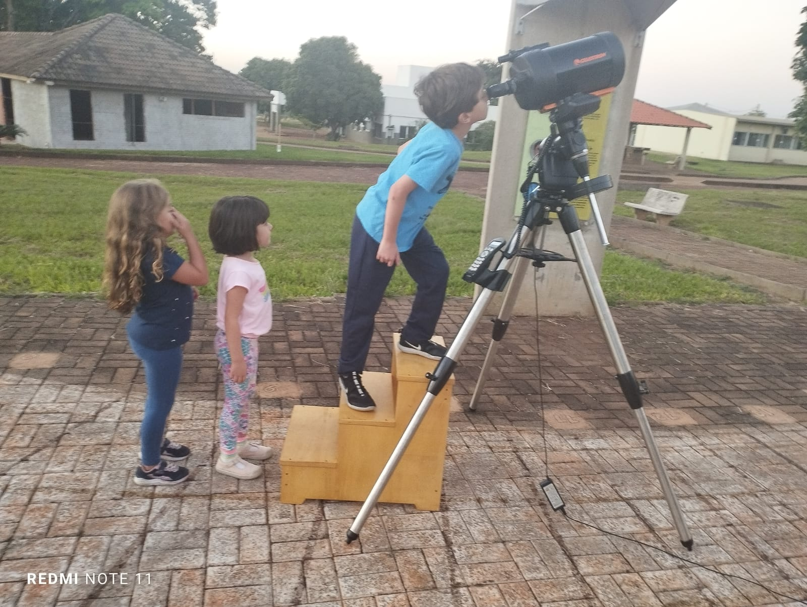
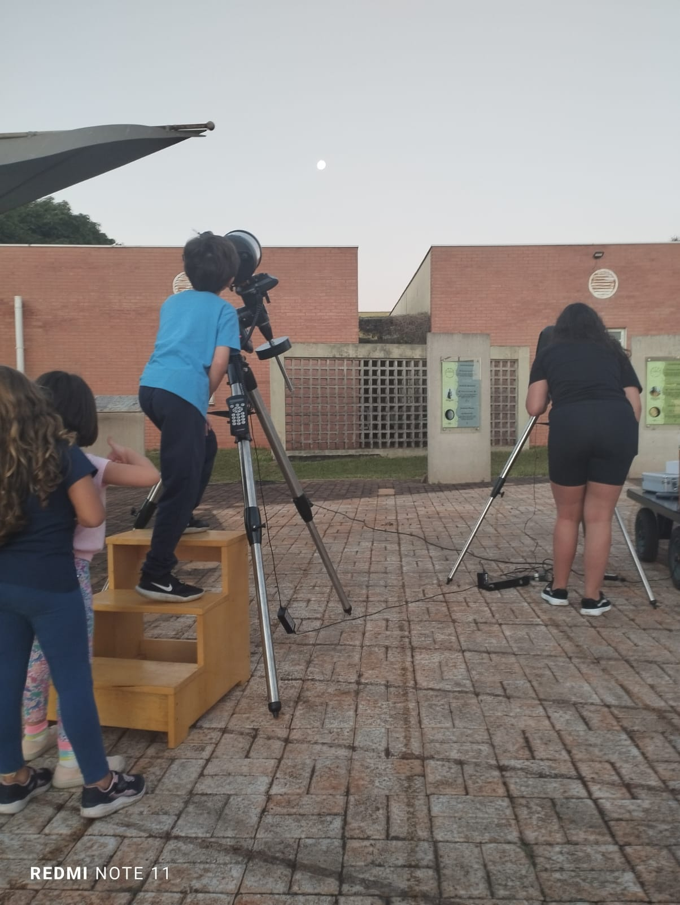

Observação do cometa Pons-Brooks
Descrição do evento
Nos reunimos a partir das 17h45 na praça do Observatório para iniciar a nossa busca pelo fugidio Pons-Brooks. O bacana desse cometa é que ele possui um período orbital de 71 anos, que é semelhante ao do cometa Halley (76 anos). Cometas são objetos que fascinam a humanidade há milênios. Mas foi somente com Edmond Halley, usando a Física de Newton, que se compreendeu que não se tratam de fenômenos atmosféricos, mas que são corpos que executam órbitas em torno do Sol como os planetas.
No caso dos cometas, as órbitas são elipses bem achatadas com o Sol próximo a uma das extremidades. A maior parte do tempo eles estão longe do Sol, geladões. Mas durante alguns meses aproximam-se dele, aquecendo-se e produzindo gás e detritos em sua volta – o que vai produzir sua coma e cauda e talvez por isso tenham feito os antigos pensarem que os cometas estavam na atmosfera da Terra.
Nesta mesma data, ainda tivemos a oportunidade de apreciar o evento de conjunção entre Júpiter e Urano, que é o momento em que os dois planetas encontram-se mais próximos um do outro a partir da nossa visão da Terra. Júpiter, facilmente visível a olho nu e Urano, somente com telescópio.
E para completar nossa seção de observação, observamos a – sempre espetacular – Lua quase cheia com nossos telescópios.
Neste evento usamos os telescópios C6-S e NexStar-4SE.
Participaram das observações em torno de 20 pessoas. A Figura 1 mostra um dos momentos das pessoas interagindo e observando o céu.
Observações
Lua
Começamos a observar a Lua, compartilhando ainda o resto do dia com o Sol. Muito bonita como sempre.


Júpiter e Urano
Pouco tempo após o por do Sol, começamos a ver Júpiter, o gigante gasoso, com suas quatro maiores luas descobertas por Galileu Galilei e, com o avanço da noite, observamos Urano, seu avô (ao menos na mitologia grega). Infelizmente, não conseguimos tirar uma foto dessa observação e mostramos na Figura 2 uma simulação bastante próxima do que vimos no céu construída com o Stellarium
Cometa Pons-Brooks
Após as excelentes observações acima, estávamos quase desistindo de tentar encontrar o cometa. Mas, usando algumas estrelas da constelação do Touro como referência, finalmente conseguimos fechar a noite com chave de ouro. A Figura 3 mostra uma simulação bastante fiel do que conseguimos observar.